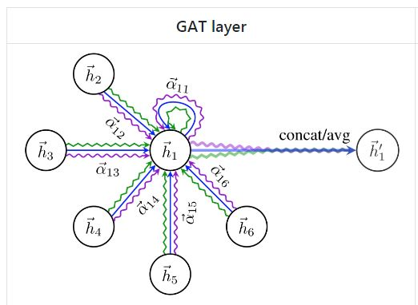

图神经网络初探¶
GCN & GAT
背景¶
技术：顾名思义，图神经网络就是用来建模拓扑图的数据，其基本思想就是基于节点的局部邻居信息对节点进行embedding。广义上来讲任何数据在赋范空间内都可以建立拓扑关联，图神经网络的应用前景是广泛的。
业务：PDF解析项目中有个任务----判断pdf中元素是否需要合并（相同类型合并，如段落、图片、表格...）。现有的方法是用xgboost训练分类模型，没有直接建模空间信息，尝试使用图算法解决。
提取拓扑图空间特征¶
两个问题：
怎么拿到不同数目的邻居节点
邻居节点的特征怎么处理
两种方式：
频谱域。不用考虑邻居节点数目，直接对特征进行处理。如：GCN。
空间域。需要针对所有节点进行计算，再从中把邻居挑出来进行处理。如：GAT。
GAT¶
Graph Attention Network
GAT的优势就是利用attention为不同的邻居节点分配了不同的权重。

核心代码：
def attn_head(seq, out_sz, bias_mat, activation, in_drop=0.0, coef_drop=0.0, residual=False):
with tf.name_scope('my_attn'):
if in_drop != 0.0:
seq = tf.nn.dropout(seq, 1.0 - in_drop)
seq_fts = tf.layers.conv1d(seq, out_sz, 1, use_bias=False)
# simplest self-attention possible
f_1 = tf.layers.conv1d(seq_fts, 1, 1)
f_2 = tf.layers.conv1d(seq_fts, 1, 1)
logits = f_1 + tf.transpose(f_2, [0, 2, 1])
coefs = tf.nn.softmax(tf.nn.leaky_relu(logits) + bias_mat)
if coef_drop != 0.0:
coefs = tf.nn.dropout(coefs, 1.0 - coef_drop)
if in_drop != 0.0:
seq_fts = tf.nn.dropout(seq_fts, 1.0 - in_drop)
vals = tf.matmul(coefs, seq_fts)
ret = tf.contrib.layers.bias_add(vals)
# residual connection
if residual:
if seq.shape[-1] != ret.shape[-1]:
ret = ret + conv1d(seq, ret.shape[-1], 1) # activation
else:
ret = ret + seq
return activation(ret) # activation
注意：这里的bias_mat是根据邻接矩阵生成的attention mask，用于过滤邻居节点，细节如下：
def adj_to_bias(adj, sizes, nhood=1):
nb_graphs = adj.shape[0]
mt = np.empty(adj.shape)
for g in range(nb_graphs):
mt[g] = np.eye(adj.shape[1])
for _ in range(nhood):
mt[g] = np.matmul(mt[g], (adj[g] + np.eye(adj.shape[1])))
for i in range(sizes[g]):
for j in range(sizes[g]):
if mt[g][i][j] > 0.0:
mt[g][i][j] = 1.0
return -1e9 * (1.0 - mt)
如何预测边¶
图神经网络的工作基本都是在编码节点embedding，大多用于节点分类。如果需要进行边分类，可以对模型稍加改造：将节点embedding抽出，处理成边特征，从而进行边预测。
DistMult方法核心代码：
def calc_score(self, embedding, triplets):
# DistMult
s = embedding[triplets[:,0]]
r = self.w_relation[triplets[:,1]]
o = embedding[triplets[:,2]]
score = torch.sum(s * r * o, dim=1)
return score
总结¶
目前图神经网络多用于节点分类和边预测，在图优化等其他任务上基本没有应用。
图神经网络对图结构有很大的依赖，对不同图结构的范化能力较差。